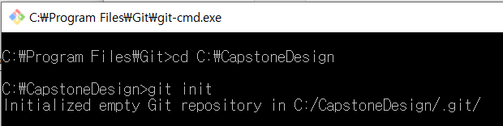
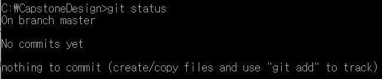
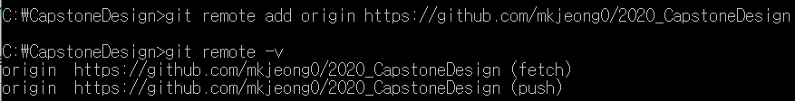

- Git 설치
- Local PC에 파일과 Remote Repository 연결 (<-클릭 시 이동)
Git 설치 방법
다운로드 링크를 클릭해서 최신버전 받기.
구글에 검색하면 git 초기 설정을 하는 방법이 구체적으로 나와있기 때문에 생략.
git cmd 사용에 앞서 주로 사용되는 명령어를 알아볼 수 있는 링크를 (여기1)와 (여기2)를 참고하길 바랍니다.
git 설치와 개인 PC에 작업할 공간(파일)을 만들었으면 다음 단계로 넘어간다.
Local PC에 작업하는 파일과 Remote Repository와 연결하기
먼저 git cmd에서 본인 컴퓨터에 설정한 폴더 경로를 가져와서 바꿔준다. (ex: cd [파일경로], cd C:\CapstoneDesign)
이제 git init 명령어를 다음과 같이 사용한다.

설정이 완료되었으면 Initialized 메세지가 나올 것이다.
추가로 현재 내가 어느 branch에 있는지 등을 알아보기 위해서 git status 명령어를 통해 알아 볼 수 있다.

마지막으로 git remote add origin 을 사용해서 아래와 같이 경로를 추가하는 것으로 Local PC에서 작업하는 것이 Remote Repository와 연결되도록 한다.

이상으로 commit을 확인 후 내용을 추가 업로드 하겠습니다.
to be continued.......
Change correct?